¿El libro del pan?
En 1892, un príncipe llamado Piotr Kropotkin, exiliado de Rusia, publicó un libro titulado La conquista del pan. En este texto, Kropotkin describió su visión de una sociedad libre que le permite a todos acceso a la comida, a la vivienda, a la ropa y a los lujos. En esencia, el libro es un esquema para un mundo sin pobreza ni represión. ¡Esta página es un espacio para compartir las ideas de Kropotkin! Además de mantener La conquista del pan en su totalidad, proponemos una pequeña introducción a sus ideas y una explicación de porqué siguen siendo relevantes, y varios recursos para difundir este conocimiento y ayudarle a tu comunidad.
¿Por qué me debería importar?
Kropotkin propone varias soluciones a los problemas que nos desafían en el siglo XXI : la inseguridad laboral y alimentaria, la falta de viviendas dignas, el malestar y la depresión en general. Si trabajamos juntos como sociedad vamos a poder enfrentar los problemas que nos desafían. Particularmente en vista de las soluciones autoritarias tomadas por las entidades estatales, creemos en la importancia de las soluciones que priorizan el bien colectivo, soluciones que nacen de las mismas comunidades a las cuales benefician. Si te interesa solucionar alguno de estos problemas y quieres agrandar tu perspectiva de lo posible, ¡sigue leyendo!

El problema
Como lo presentamos arriba, nuestra sociedad se enfrenta a muchos problemas. Sin embargo, no son insuperables. Kropotkin escribe que todos estos problemas comparten una misma causa la cual es, según él, un desequilibrio general del poder. Es decir, Kropotkin no creía que la sociedad tuviera una serie de problemas desconectados, sino que sufre de uno: del concepto que hay individuos dignos de ejercer el poder sobre otros. Kropotkin rechazó esta idea por completo. Al contrario, luchó para crear un mundo más equitativo, donde nadie tiene que seguir las órdenes de otro y en que todos se encuentran con la libertad de realizar sus deseos. Creemos que el problema de poder que Kropotkin describió sigue siendo, en gran parte, el orígen de los problemas de la sociedad y que esto se manifiesta en dos ámbitos principales.
Trabajo
Para la mayoría de la gente, la idea de trabajar 40 horas a la semana durante toda su vida en un trabajo que no les agrada particularmente es infernal. Sin embargo, es exactamente lo que terminamos haciendo. En ciertas partes del mundo, la semana laboral es aún más larga, con gente trabajando hasta 80-100 horas por semana. Si nadie quiere trabajar tanto, en trabajos que no les agradan, ¿por qué terminamos haciéndolo? En breve, es por un equilibrio de poder injusto. Lo que necesitamos para vivir una buena vida (comida, abrigo, ropa) y todo lo necesario para crear y cultivar estos elementos le pertenecen a una pequeña fracción de la población. Para tener acceso a estas necesidades, la mayoría de la gente debe arrendarse a esa fracción a cambio de un sueldo. No podemos acceder a lo que necesitamos de otra manera, y esta forma de trabajo forzado se a propagado por el mundo. ¿Cómo pasó esto? Como herencia incontestada del feudalismo, los nobles y reyes del pasado se han transformado en los dueños y CEOs de las compañías multinacionales que nos obligan a nosotros - los campesinos contemporáneos - a prestarnos a su voluntad a cambio de 'protección' moderna, manteniendo casi la misma relación.
Representación
Una de las cosas que sí ha cambiado del feudalismo es que en vez de monarquías y noblezas hereditarios, tenemos la posibilidad de elegir nuestros jefes de estado. Este proceso generalmente se celebra como el triunfo de la 'democracia', pero como muchos se han dado cuenta, las personas en el gobierno no representan realmente la gente que los eligió. Por el contrario, estos políticos siguen solo a los ricos, los mismos que nos obligan a trabajar para ellos. Esto sucede porque, en un mundo donde una pequeña minoría controla todo el capital y la propiedad, ese grupo es el único que vale la pena escuchar. Por eso, los políticos a menudo hacen campaña con promesas de 'cambiar' o de 'limpiar' la política, pero siempre terminan empleando a los ricos y llegando a acuerdos que favorecen a los bancos, las grandes empresas, y ellos mismos. Hasta los políticos supuestamente 'de izquierda', que prometen derribar a los ricos, terminan ya sea instituyendo un sistema de control totalitario, o nunca llegan a la altura de sus promesas. En momentos particularmente terribles, políticos de todos los frentes declaran guerras e intensifican conflictos a nombre de la 'libertad' o de la 'justicia', todo para enriquecer a los millonarios dueños de las empresas de suministro militar. Sin importar lo buenos que puedan parecer, los políticos siempre hacen lo mismo, por el gran desequilibrio de poder que existe entre el 1% de dueños y el 99% de trabajadores.
La solución
En vez de depender de las estructuras de poder que perpetúan el problema, Kropotkin nos ofrece una solución que le devuelve el poder de controlar sus propias vidas a los individuos y las comunidades. En vez de construir un mundo basado en la avaricia y las riquezas privadas, o un mundo basado en la represión estatal y el control totalitario, podemos construir un mundo que rechaza ambos caminos que se nos han presentado como la 'izquierda' y la 'derecha', y armar nuestro propio camino hacia la libertad. Podemos compartir nuestros recursos. Podemos destruir las paredes del legalismo y la violencia. Podemos voluntariamente ayudarnos los unos a los otros. Podemos construir un mundo basado en el amor y el perdón. Debemos demandar el acceso de todos a las necesidades de la vida y construir comunidades voluntarias basadas en ayuda mutua. No tenemos que encontrar un equilibrio entre el poder privado y el poder del estado - generalmente presentados como el 'capitalismo' y el 'socialismo' - podemos rechazarlos ambos, y construir un mundo diferente y mejor.
